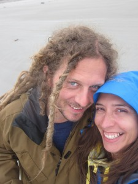

About Us
We are Kelvin and Priscila. We left our safe port of London to go travelling around the world. Why? Why not.

The journey started in April 2013, and we don't know when it will end. We will start in South East Asia followed by Australia, Fiji, New Zealand, Hawaii and will reach Brazil just in time for Carnival in March 2014 the World Cup in June 2014.
We will aim to share our stories in this blog through writing and photography. We hope our experiences are inspirational and our research and advice is helpful to anyone wanting to do the same.
Follow us to see where we end up!